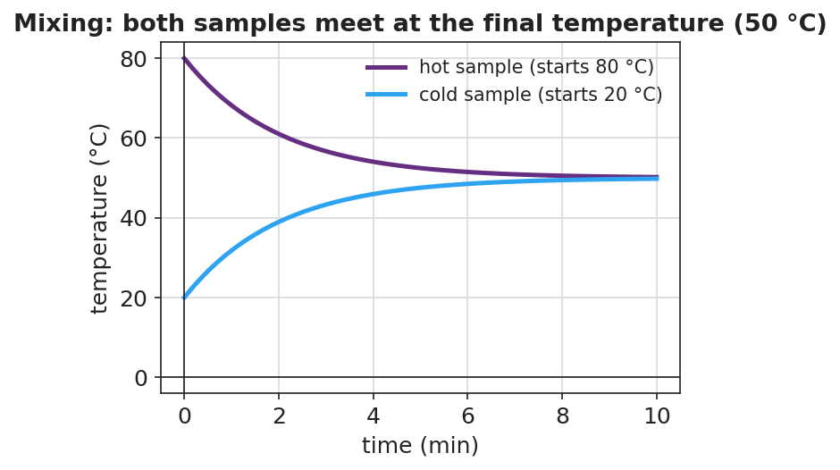

Unit: Thermal Energy & Conservation — Lesson 03: Calorimetry — Thermal Tales
Phenomenon
Your teacher holds equal amounts of hot water (80 °C) and cold water (20 °C). They are about to be poured together into an insulated cup. What will the thermometer read after they mix — 100 °C? 50 °C? Something else?

Driving Question
When hot and cold water mix in a closed cup, what decides the final temperature?
Notice & Wonder
Before anything is mixed, write two things you notice and two things you wonder. Then commit to a prediction: final temperature = ______ °C.
Initial Model
With your group, plan the investigation. What will you measure (masses, starting temperatures)? How will you keep the system closed? How will you know when you've reached the final temperature?
Investigate
Set the mass and starting temperature of the hot and cold water. The model uses heat lost = heat gained (Q = m·c·ΔT, with the same c for both) to compute the final temperature, then shows both curves meeting there. Notice how the heavier sample pulls the final temperature toward itself.
Final temperature: 50.0 °C · Heat lost by hot = 25116 J · Heat gained by cold = 25116 J. In a closed cup these are equal — energy is conserved.
Make It Make Sense
- Why does mixing equal masses of hot and cold water give a final temperature in the middle (the average)?
- If you mixed a little hot water into a lot of cold water, would the final temperature land above or below the average? Why?
- Why did we use a foam cup with a lid instead of an open metal beaker?
Stuck? Sentence frame
"The heat lost by the ___ water equals the heat gained by the ___ water, so the final temperature is ___."
Key Vocabulary (max 3)
- calorimetry — the measurement of heat transfer, usually by mixing substances in an insulated container and tracking temperature change
- specific heat — the energy needed to raise the temperature of 1 kg of a substance by 1 °C (the "c" in Q = m·c·ΔT)
- heat — the thermal energy (Q) transferred from a hotter object to a cooler one, measured in joules
Revise Your Model
Predict: 0.10 kg of 80 °C water poured into 0.30 kg of 20 °C water. Will the final temperature be above or below 50 °C? Justify using Q = m·c·ΔT (heat lost = heat gained). Then check your answer with the slider above.
Return to the Phenomenon
Use heat lost = heat gained to explain in one sentence why your mixed cup settled where it did.
Exit Ticket + Closing Reflection
- In an insulated cup you mix 0.20 kg of water at 80 °C with 0.20 kg of water at 20 °C. (c_water = 4,186 J/kg·°C.)
(a) Using heat lost = heat gained, what is the final temperature?
(b) Calculate the heat gained by the cold water with Q = m·c·ΔT.
(c) How does that compare to the heat lost by the hot water, and what principle does that show? - Reflection: What is one thing today that changed how you think? Who helped you make sense of it?